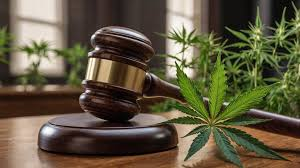

Las leyes suelen contemplar penas por tráfico, cultivo o posesión para consumo propio. La dureza de las penas varían según el país. Los Países Bajos es el único país de la Unión Europea donde se permite legalmente la venta de marihuana y sus derivados para usos recreativos, en locales con licencia denominados coffee shops.[cita requerida]. En Alemania está prevista una legalización similar en abril de 2024. En Uruguay (desde 2013), en Canadá (desde 2018) y en algunos Estados de EEUU se permite también la venta de marihuana para consumo recreativo, con ciertas restricciones. En el artículo 194 dice que «se impondrá de diez a veinticinco años y de cien hasta quinientos días de multa» a quien: -Produzca, transporte, trafique, comercie, suministre aun gratuitamente o prescriba alguno de los narcóticos señalados en el artículo anterior, sin la autorización correspondiente a que se refiere la Ley General de Salud. -En abril de 2009 el Congreso de la Unión despenalizó la posesión de hasta cinco gramos de esta planta, estrictamente para consumo personal.
-En noviembre de 2015, la Suprema Corte de Justicia de la Nación estableció que la Sociedad Mexicana de Autoconsumo Responsable y Tolerante (Smart) tiene el derecho de cultivar marihuana para el autoconsumo sin fines de lucro. Los usuarios serán sometidos a tratamiento obligatorio solamente después del tercer arresto. Existen diferentes puntos que se deben de considerar para los portadores y quienes son sorprendidos con dicha sustancia. "El consumo de sustancias psicoactivas no es un delito en México, pero la posesión con fines de consumo sí está tipificada como delito. No obstante, si la posesión no excede los montos máximos que establece la Tabla de Orientación y si no se presenta en los lugares señalados en el Art. 475 de la Ley General de Salud (escuela, cárceles, etc.) entonces no lleva aparejada pena privativa de libertad".
